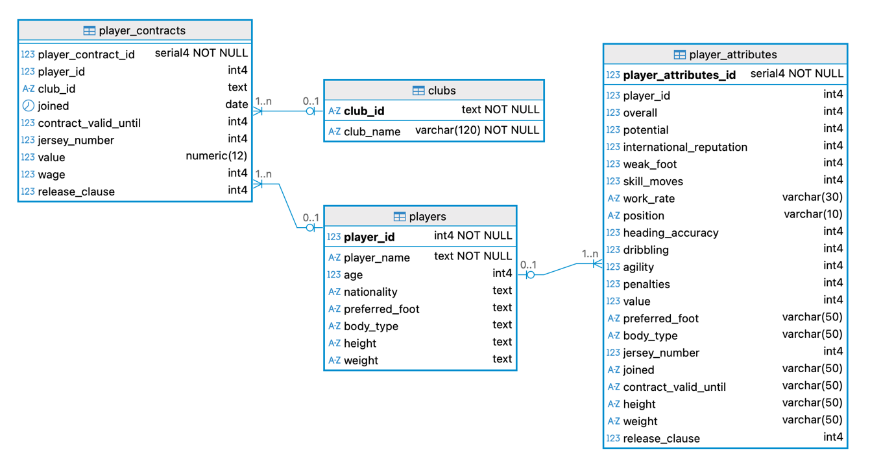

01 What is this assignment about?
In this assignment, you will create indexes for the football database.

02 Before you start
- If you do not have access to the football database, run the file football.sql.
- Make sure you comment each query explicitly with the question number and the question you are answering.
- Show the efficiency of the index through EXPLAIN ANALYZE before and after creating the index (check classroom examples if you are unsure).
03 Questions
Question 1: Your manager complains that reports for specific nationalities are slow.
- Write a query to list all players from Germany. Show player_name, age and nationality. Check how long this query takes to run.
- Now, create an index on players(nationality) and re-run the query you wrote for part a.
- Write a comment on your SQL script explaining if there were any improvements after creating the index.
Question 2: The finance team frequently wants a report with the top-paid players across all clubs.
- Write a query that returns player_name, club_name, and wage. Use EXPLAIN ANALYZE to check how long that query takes to run.
- Create an index on the wage column and re-run the query you wrote for part a.
- Write a comment on your SQL script explaining if there were any improvements after creating the index.
Question 3: Your manager wants details on expensive players, with market_value above 5,000,000.
- Write a query to list all players whose market)value > 5,000,000, displaying the player_name, club_name, value and wage. Use EXPLAIN ANALYZE to check how long that query takes to run.
- Create a partial index that only stores rows with market_value above 5,000,000. Re-run the query you wrote for part a.
- Write a comment on your SQL script explaining if there were any improvements after creating the index.
Question 4: The whole team is happy with your efficient new queries, except for the people in charge of the server – they say you might be using too much space and ask for a report. Write a query that shows the space used by each index you created. Your results should be presented in a single table, with each row showing the size of each index.